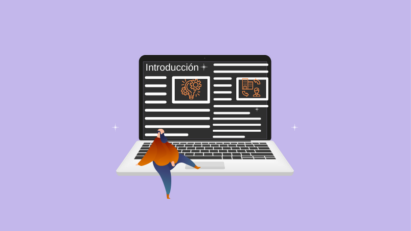
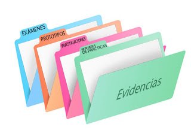

A través de la siguiente pagina encontraran un pequeño resumen de lo que es el proyecto de aula con una animación realizada en Animaker, donde explicamos que es el proyecto de aula, con sus partes, evidencias y de que están hechas los sitios web. Todo con solo darle clic en la imagen que aparece o con el enlace que esta abajo llamado "Introducción del Proyecto" Para mas información: Introduccion Del Proyecto.

A través de la siguiente pagina encontraran toda la evidencia presentada para realizar el proyecto de aula, encontraran álbumes, folletos, paginas web, etc. Esto se hace con el fin de presentar todas las actividades realizadas en el cuatrimestre con el programa de producción multimedial con el profesor Bryan Fernández. Todo con solo darle clic en la imagen que aparece o con el enlace que esta abajo llamado "Evidencias del Proyecto" Para mas información: Evidencias Del Proyecto.